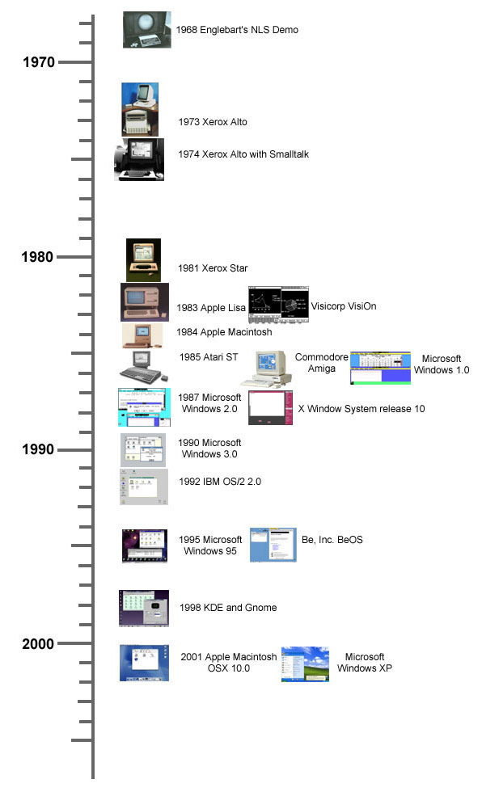

TempleOS runs 8-bit ASCII with small a 2D and 3D graphics library running at 640x480 VGA with 16 colours. It has no networking support, and Davis has no plans to introduce this. While Davis explains this is God’s will, it is also the case that avoiding networking means that there is no need to implement a security model and creation of the operating system is an overall easier task. As a simple standardised platform, which only supports local working, TempleOS has attracted comparisons to the Commodore 64.23 While this similarity may be in part due to the way in which technical limitations are generative of design and functionality, it is also a deliberate aesthetic choice on the part of Davis. He says:
It's fun having access to everything. When I was a teenager, I had a book, Mapping the Commodore 64, that told what every location in memory did. I liked copying the ROM to RAM and poking around at the ROM BASIC's variables. Everybody directly poked the hardware ports.
TempleOS is simpler than Linux and you can have hours of fun tinkering because all memory and ports are accessible. Memory is identity-mapped at all times, so you can modify any task's memory from any other task. You can access all disk blocks, too. I had a blast using a C64 disk block editor to modify directories to un-delete files, when I was a kid. Maybe, you want to play with a raw-block database, or make your own file system?
A unique aspect of TempleOS, which marks a break with the graphic user interfaces that are typical in today’s operating systems, is the way in which it blurs the line between the shell, programs and documents. Documents use a format called DolDoc, and can store rich text, images, trees, macros and hyperlinked commands. Our modern conception of graphic user interfaces grew out of the Xerox Company’s Palo Alto Research Centre (PARC), based on ideas introduced by Douglas Engelbart in the 1960s. The first recognisably modern user interface with windows, icons, menu and mouse was the Apple Lisa. TempleOS demonstrates the bitmapped screen and the mouse-driven navigation of the Xerox Parc, but diverges from the timeline of graphical user interfaces in its rejection of the image-based metaphors of the Apple Lisa. Instead of launching applications in TempleOS by clicking on an image, you simply type a word (and hyperlink the command).

DolDoc is also the format of the shell, which means it is possible to embed images in source code and, conversely, it is possible to launch routines from a document. The shell can be used as a file navigator by simply clicking on a hyperlink. The way in which TempleOS embeds images and text within a document creates interesting effects whereby opening the source code of a flight simulator game results in an eagle sprite dive-bombing your screen. The DolDoc manner of file navigation rejects the hierarchical file system of standard operating systems that has been criticised as a poor fit for the way in which the human mind models information.
This is not to say that the interface of TempleOS is entirely novel. As discussed above, the Commodore 64 had an interface that did not distinguish between user interface and programming interface, for example, and MIT’s Lisp machines had a Lisp programming environment as their user interface. Unconventionally, however, TempleOS is written in the same language as that used for the shell. Davis writes:
For other operating systems, I hated learning one language for command line scripts and another for programming. With TempleOS, the command line feeds right into the HolyC compiler, line by line, and it places code into memory... The compiler is paused at the command line, waiting for input. Naturally, you #include a program to load it into memory and, usually, start it.
Matthew Fuller, in Behind the Blip, quotes Donald Norman, who suggests user-centered design should allow for “interacting with the task, not with the computer”. The blurring of functions resulting from the novel use of HolyC and DolDoc means that interacting with the task in TempleOS is comparable to interacting with the computer. Because every piece of code in TempleOS is JIT compiled on demand, it is possible to overwrite the running operating system fairly easily. For a careless user (i.e. me) misplaced keystrokes result in crashing the operating system with frustrating regularity.

The full essay is 5000 words so if you want to read the rest of it, let me know and I'll email the PDF.